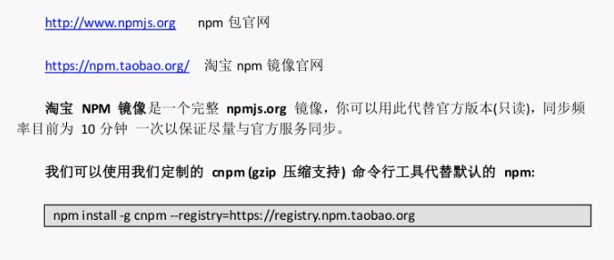

# 设置淘宝镜像
npm install -g cnpm --registry=https://registry.npm.taobao.org |
之后就可以用 $cnpm install 来安装包

# 先执行如下命令 create package.json
package.json 和 package-lock.json 可以在把项目发送给别人后便于别人查看和下载 node_modules
当接到新的 NodeJS 平台项目后，直接 cd 到项目目录然后 $npm install 就可以安装项目所需的所有 node modules
$cd 项目目录 | |
$npm init // create package.json文件 | |
init过程中默认回车就可以了 | |
Press ^C at any time to quit. | |
package name: (workspace) //默认入口项目名 | |
version: (1.0.0) | |
description: | |
entry point: (index.js) | |
test command: | |
git repository: | |
keywords: | |
author: | |
license: (ISC) | |
About to write to F: | |
$npm install 包 // 会自动创建package-lock.json文件 |
# supervisor
这个包用来启动如 app.js 等服务文件，当源码里有代码改变时，supervisor 会自动重启服务，浏览器直接刷新就可看到更改
$ npm -g install supervisor | |
$ supervisor app.js |